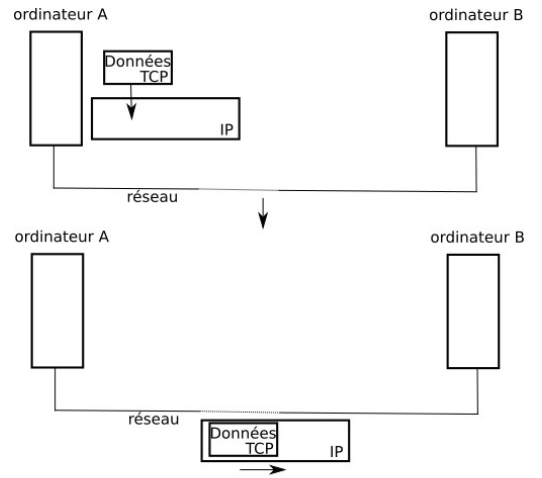
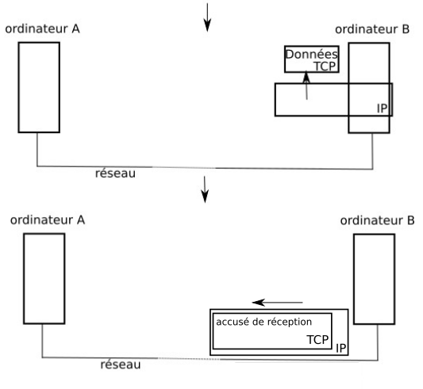
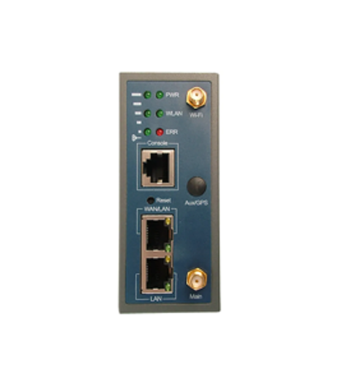
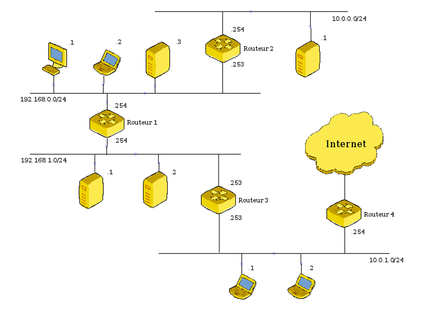
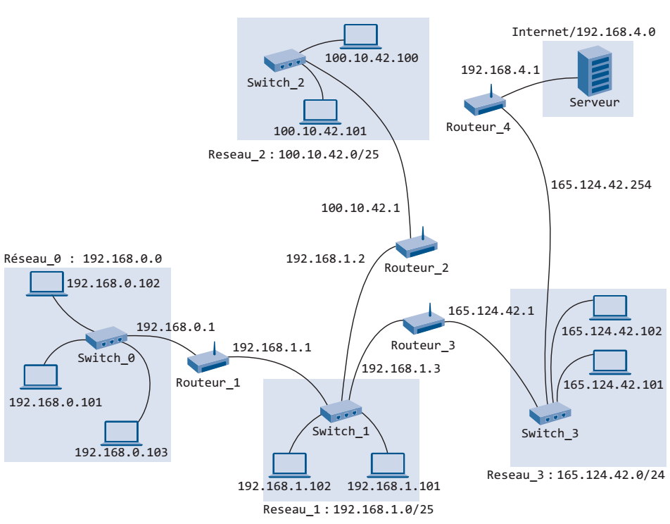

graphes et internet
Ce cours comporte plusieurs pages:
- cours sur les graphes. Term NSI
- modele OSI et TCP/IP. 1ere Nsi
- graphes et internet
- Protocoles de routage
- algorithmes de parcours des graphes
- algorithme de Dijkstra
- Activite sur les arbres couvrants
- Arbres
Modéliser le réseau internet
réseau internet
Le reseau internet repose sur :
- l’usage de datagrammes pour transmettre l’information
- le routage de ces datagrammes par des ordinateurs spécialisés, … les routeurs.
Le reseau internet est un reseau qui connecte entre eux des reseaux, à l’echelle mondiale. Voir lien vers la page Reseaux de seconde SNT pour revisions
Le datagramme: les informations échangées
Dans le modèle TCP/IP, les ordinateurs peuvent établir et réaliser une communication selon plusieurs couches, qui cloisonnent les logiciels et technologies utilisées. D’après la norme, les couches vont de la plus haute (couche 7: l’utilisateur) à la plus basse (couche 1: support physique).
Lorsque vous envoyez une requête ou un fichier à une machine distante, les logiciels installés vont fabriquer des trames de 1500 octets, dont le datagramme contient les données utiles pour la transmission (dont l’adresse IP du destinataire et de l’emetteur), et les informations à transmettre, le tout sous format binaire.
Souvent, les informations à transmettre occupent un poids trop important pour être placées dans une trame de 1500 octets. Il faudra alors plus d’une trame pour envoyer les différents paquets, qui devront être reconstruits à l’arrivée.
Durant le trajet à travers les différentes couches du modèle OSI, 4:application, 3:transport, 2:internet et 1: hôte-réseau , le datagramme subira des modifications et chaque couche rajoutera ce qu’elle voudra:
- La couche 4:transport va ajouter les informations utiles pour contrôler l’arrivée l’ordre des paquets envoyés: résolu par le protocole TCP.
- La couche 3:internet va ajouter les informations utiles pour interconnecter les réseaux: résolu par le protocole IP.
Ce mécanisme s’appelle l’encapsulation, car les données de la couche 2 vont contenir celles de la couche 3, etc…
Ainsi, à la sortie de la couche 2, la requête HTTP issue de votre navigateur est transformée en une série de données que l’on peut segmenter en:
[en-tête Ethernet, wifi ou 4G][en-tête IP][en tête TCP][requête HTTP][checksum Ethernet]
La machine distante, qui reçoit cette trame, va alors repondre immédiatement en envoyant un accusé de reception.

principe de l'emission - reception d'une trame sur internet

envoi d'un accusé de reception
- compléments et rappels de 1ere NSI: Lien
- Voir aussi: Le cours sur openclassrooms.com, detailler une trame
Les machines
Les machines reliées dans le réseau internet peuvent être:
- un ordinateur (machine hôte)
- une imprimante
- un commutateur (switch) : mis en reseau de manière centralisée, n’a pas d’adresse IP, agit au niveau de la couche 2, connecte les machines dans le sous-reseau, sert à envoyer les trames au destinataire direct, ne possède pas d’adresse IP.
- routeur : transporte les paquets même s’ils ne lui sont pas adressés directement, choisit la meilleure route, joint plusieurs réseaux, agit au niveau de la couche 3.
Un routeur possède plusieurs cartes réseaux. Chacune de ces cartes réseau est liée à une interface, possédant une adresse IP, en rapport avec le sous-reseau auquel l’interface est reliée.
Sur le routeur suivant, il y a 3 ports ethernet, ainsi qu’une antenne wifi. Ce qui fait 4 cartes reseau:

routeur de la marque Siretta
On suppose qu’une carte reseau propose une seule interface (une porte vers le sous-reseau directement relié), et possède donc une seule adresse IP.
Adresse IP
Dans le reseau internet, les reseaux et les machines sont identifiés par un numéro unique, l’adresse IP. Pour être exact, ce sont les cartes reseaux des machines qui possèdent une adresse IP.
Pour plus de précisions sur l’adressage IP ainsi que le masque de sous-reseau, voir la video sur IP et masque sous-reseau (L. Guerin) :

video sur IP et masque sous-reseau (L. Guerin)
Une adresse IP de la norme IPv4 est un nombre binaire codé sur 32 bits, soit 4 octets. Le nombre d’adresses possibles est alors de plus de 4 milliards.
Exemple d’adresse IPv4 exprimée à l’aide de 4 valeurs décimales (0-255):
192.168.0.1/24
La notation utilisant CIDR composé d’une adresse IPv4 et d’une indication sur le masque de sous réseau. Par exemple : 192.168.0.1/24 signifie :
- Adresse IP : 192.168.0.1
- Masque de sous-réseau en notation CIDR : 24
- partie reseau de l’adresse: 24 premiers bits, c’est à dire les octets 192.168.0
- partie machine de l’adresse IP: les 8 derniers bits (32 - 24), soit le dernier octet: .1
Machines appartenant à un même reseau
Definition: Deux machines sont sur le même réseau si et seulement si, les parties réseau de leur adresse IP sont identiques.
Les derniers caractères /24 correspondent au masque de sous-reseau. Ils signifient que le reseau contenant la machine a une adresse codée sur les 24 premiers bits (192.168.0). Et que les 8 derniers bits constituent l’adresse de la machine dans ce reseau (il s’agit donc du .1 final).
Le masque de sous-reseau peut être aussi exprimé sous la forme binaire. Les N premiers chiffres du masque valent alors 1 et les autres (jusqu’au 32e) valent 0. Par exemple:
/8 correspond à 11111111 00000000 00000000 00000000.
Il est alors plus commode d’écrire l’equivalent décimal pour chacun des bits:
255.0.0.0
Remarque sur la norme IPv6
Pour la norme IPv6, ce nombre est sur 128 bits, soit 16 octets.
Exemple d’adresse IPv6 exprimée en hexadécimal (32 caractères): 2001:0db8:3c4d:0015:0000:0000:1a2f:1a2b
Exercices sur les adressages IP:
Voir l’exercice n°4 du sujet de Baccalaureat: centres etrangers 2021: étude d’un reseau informatique
Voir l’exercice n°1 du sujet de Baccalaureat: Metropole Sept 2021: reseau d’ordinateurs
Table de routage (reseau local)
Chaque routeur reçoit des données et doit décider à qui les transmettre. Pour cela, il dispose de tables de routage construites soit statiquement (par un humain), soit dynamiquement (par un programme).
Lorsqu’il reçoit un message (une trame), il lit l’adresse IP du destinataire et le redirige dans la bonne direction:
- soit le routeur est directement relié au bon reseau, contenant le destinataire: le message va alors circuler par la carte reseau correspondante (l’adresse Passerelle (Gateway)).
- soit l’adresse lui est inconnue: c’est sa table de routage qui va lui dire à quel autre routeur l’envoyer.
La table de routage contiendra donc:
- les adresses IP des reseaux et des passerelles (cartes reseaux) auxquels le routeur est directement relié.
- l’adresse IP 0.0.0.0 (celle d’internet) sera associée à la passerelle qui fera circuler le message vers internet. Ce sera l’adresse IP du routeur voisin qui pourra acheminer ce message vers internet.
- les adresses IP des reseaux auxquels le routeur n’est pas directement lié. La passerelle sera l’adresse de la carte reseau du routeur voisin qui mène à ces reseaux.
Exemple:
Dans cette représentation, on donne l’adresse des réseaux lorsqu’il y a plusieurs connexions. Par exemple 192.168.1.0/24 pour le reseau en bas à gauche. Pour toutes les machines connectées, on ne donne que la partie adresse machine. Il s’agit du dernier octet de l’adresse IP.

système n°1
| reseau à rejoindre | passerelle (Gateway) |
|---|---|
| 192.168.0.0/24 | 192.168.0.254 |
| 192.168.1.0/24 | 192.168.1.254 |
| 0.0.0.0 | 192.168.1.253 |
| 10.0.0.0/24 | 192.168.0.253 |
Remarque: La table de routage du logiciel Filius donne également l’adresse 127.0.0.0/ 255.255.255.255. Cette adresse est réservé pour le bouclage, c’est-à-dire l’auto-adresse d’un hôte, également connue sous le nom d’adresse localhost. Cette adresse IP de bouclage est entièrement gérée par et dans le système d’exploitation et ne renvoie pas vers un port du routeur.
Voir l’exercice n°1 du sujet de Baccalaureat: Metropole Sept 2021: Architecture de reseau d’ordinateurs, table de routage
TP : simulation d’un reseau à l’aide du logiciel Filius
Modélisation du réseau par un graphe
Considérons système informatique constitué de:
- 4 réseaux LAN
- Un switch par reseau
- plusieurs machines hôtes, partagées dans les 4 reseaux
- une passerelle vers internet
Les adresses IP indiquées sur le schéma suivant concernent toutes les cartes reseaux des machines. Les routeurs possèdent une carte reseau par interface reseau.

exemple d'un reseau de sous-reseaux
| reseau | adresse IP | symbole utilisé dans le graphe |
|---|---|---|
| reseau 0 | 192.168.0.0 | S0 |
| reseau 1 | 192.168.1.0 | S1 |
| reseau 2 | 100.10.42.0 | S2 |
| reseau 3 | 165.124.42.101 | S3 |
| internet | 192.168.4.0 | internet |
Et celle des différentes machines
| machine | adresse IP | symbole utilisé dans le graphe |
|---|---|---|
| routeur 1 côté reseau 0 | 192.168.0.1 | R1 |
| routeur 1 côté reseau 1 | 192.168.1.1 | R1 |
| routeur 2 côté reseau 1 | 192.168.1.2 | R2 |
| routeur 2 côté reseau 2 | 100.10.42.1 | R2 |
| routeur 3 côté reseau 1 | 192.168.1.3 | R3 |
| routeur 3 côté reseau 3 | 165.124.42.1 | R3 |
| routeur 4 côté reseau 3 | 165.124.42.254 | R4 |
| routeur 4 côté internet | 192.168.4.1 | R4 |
Liens
Videos présentées dans cette page
- Video (Youtube): reseaux, adresses IP et masques de sous-reseaux
Autres documents
- cours complet sur les tables de routage, et les algorithmes de routage: dlatreyte.github.io
- cours complet de niveau term NSI sur les reseaux autonomes: infoforall
- autres exercices sur les algo de routage http://www.netlab.tkk.fi/opetus/s38121/s01/Exercises/solution3.pdf et https://www.netlab.tkk.fi/opetus/s38122/s00/Exercises/Exercise-3.pdf